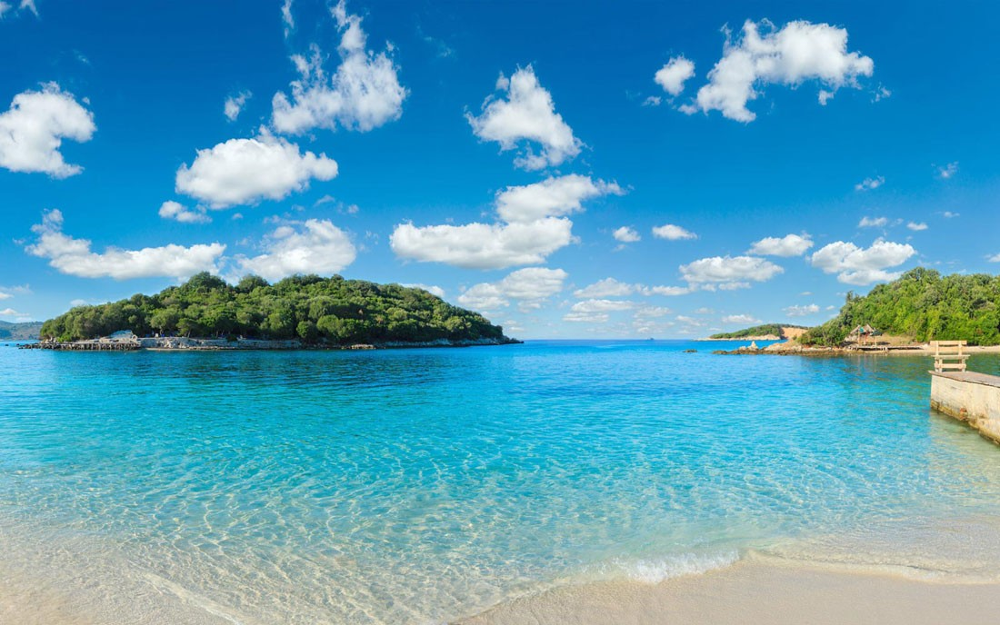

<html>

<head>
    <meta charset="UTF-8">
    <title>Lista de intereses y habilidades</title>
</head>

</html>

<body id="inicio">

    <header>
        <!-- 5. Logotipo/foto de perfil que enlaza al inicio -->
        <a href="#inicio" title="Ir al inicio">
            
        </a>
        <h1>Mi galería de imágenes</h1>
    </header>

    <main>
        <section class="galeria">

             <!-- 1. Imagen con ruta relativa -->
            <figure>
                
                <figcaption>Mi afición por la música: tocar la guitarra.</figcaption>
            </figure>

            <!-- 2. Imagen con ruta absoluta -->
            <figure>
                
                <figcaption>Uno de mis proyectos de desarrollo web en marcha.</figcaption>
            </figure>

            <!-- 3. Imagen con ruta local -->
            <figure>
                
                <figcaption>Un viaje inolvidable a la playa al atardecer.</figcaption>
            </figure>

        </section>
    </main>

</body>

</html>